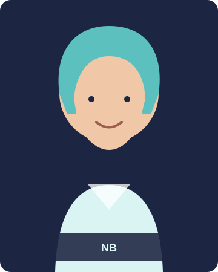

Project team
Principal Investigator

Prof. David Stifter
PI
David Stifter is a leading expert in Celtic historical linguistics. He was the editor of an interactive dictionary of Lepontic and Cisalpine Gaulish, Celtic languages spoken in ancient northern Italy. He has also co-edited several books on Celtic and Indo-European linguistics, among them the four-volume collection The Celtic World. Critical Concepts in Historical Studies, and he is founder and chief editor of the academic journal Keltische Forschungen. He was the director of a groundbreaking project, based at the University of Vienna (where he worked until 2011), which makes available the lexicon of Old Irish as found as ‘glosses’ (that is, brief annotations and comments in medieval manuscripts) in a 9th-century manuscript in the Ambrosian Library in Milan: these short texts are among our most important sources for the Old Irish language. Currently he is, amongst other things, involved in collaborative international research to elucidate the usage of magic in Medieval Ireland.
Post-doctoral Researchers

Dr Truc Ha Nguyen
Old Irish Philology and database annotation
Truc Ha holds a BSc in Radiation Therapy (2010) from the University of Sydney and worked for a year treating cancer patients in Tasmania, Australia. Afterwards, she completed a BA in Celtic Studies (2015) in the University of Sydney and then an MA in Early Irish (2017) in Trinity College Dublin. Her PhD project was a critical edition of the Middle Irish text Airec Menman Uraird maic Coisseem>. Her research interests are in textual criticism, Old and Middle Irish language and literature and manuscript studies. She was a member of the ChronHib since August 2019 as a part-time research assistant, before joining the DiⒶgnostic project in 2025.

Dr Adrian Doyle
NLP and DH research for Old Irish
Adrian's work focuses on computational techniques and resources to support under-resourced and minority languages. His work on the DiⒶgnostic project involves developing computational tools and techniques to support the study of dialect in Old Irish writings, and to facilitate the digitisation and annotation of Early Irish texts. His research interests are in the area of natural language processing for Celtic languages. Before joining the DiⒶgnostic project, Adrian took part in projects like Cardamom and Teanga2.0 at the Insight Centre for Data Analytics, and GLOSSAM in the Department of Classics at University of Galway. Adrian received his PhD research from the University of Galway in 2024 for his work on the application of NLP techniques to diplomatically edited Old Irish text.

Dr Francesco Felici
Old Irish pedagogy and database annotation
...
Early-career researchers
Paul Le Muer-Bouthemy
PhD Student
...
Ruben Sester
Research Associate
...